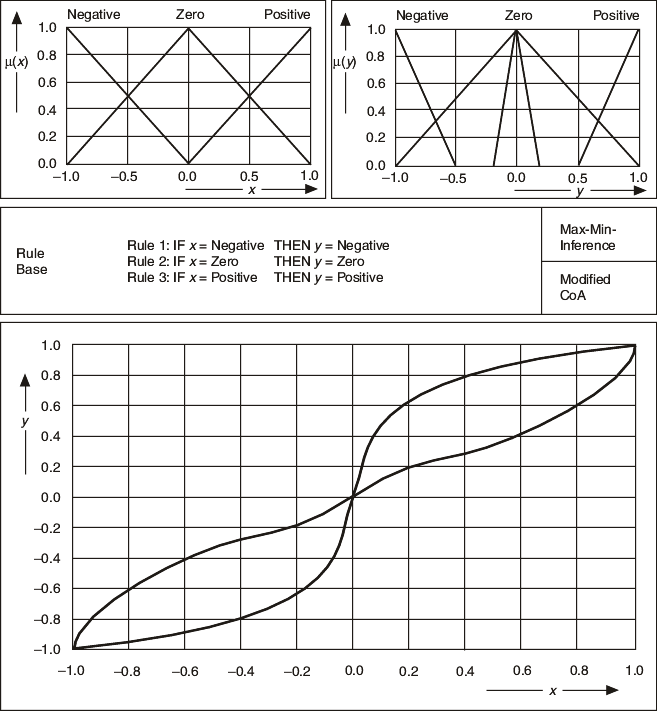

If you want to significantly influence the controller characteristic, use output terms that membership functions model with equally distributed typical values but different scopes of influence instead. The different terms have different areas and thus different weights with respect to the defuzzification process. A wide output term has more influence on the inference result than a small neighboring output term. The following image demonstrates this effect.
